Глава 6. Настройка системы хранения
В данной главе мы собираемся рассмотреть как в Proxmox VE настраиваются системы хранения. Мы охватим следующие разделы в данной главе:
-
Настройку основного хранилища
-
Установку хранилища FreeNAS
-
Соединение с хранилищем iSCSI
-
Соединение с хранилищем LVM
-
Соединение с хранилищем NFS
-
Соединение с хранилищем Ceph RBD
-
Соединение с хранилищем ZFS
-
Соединение с хранилищем GlusterFS
Содержание
Хранилище является местом, где размещаются образы виртуальных дисков виртуальных машин. Существует множество различных типов систем хранения со многими различными свойствами, производительностью и способами применения. Вне зависимости от того является ли хранилище локальным с непосредственно подключенными к нему дисками или совместно используемым хранилищем с сотнями дисков, основным предназначением хранилища является размещения образов виртуальных дисков, шаблонов, резервных копий и тому подобного. Proxmox поддерживает различные типы хранилищ,такие как NFS, Ceph, GlusterFS и ZFS. Различные типы хранилищ могут хранить различные типы данных.
Например, локальное хранилище может хранить любые типы данных, такие как образы дисков, шаблоны ISO/ контейнеров,
файлы резервных копий и тому подобное. Хранилище Ceph, с другой стороны, может размещать только образы дисков формата
.raw. Для предоставления правильного типа хранения для правильного применения
жизненно важно иметь правильное понимание различных типов хранилищ. Предоставление полных сведений о каждой системе
хранения выходит за рамки данной книги, но мы рассмотрим как подсоединять их к Proxmox и сопровождать систему хранения
для виртуальных машин.
Системы хранения могут быть настроены в двух основных категориях:
-
Локальные хранилища
-
Совместно используемые хранилища
Локальные хранилища
Любое хранилище которое размещается в самом узле с применением напрямую подключаемых дисков называется локальным хранилищем. Этот тип хранилища не имеет избыточности помимо предоставляемой RAID контроллером который управляет массивом. Если узел отказывает сам по себе, хранилище становится полностью недоступным. Миграция виртуальных машин в живую невозможна когда виртуальные машины сохраняются на локальных хранилищах поскольку в процессе миграции виртуальный диск данной виртуальной машины должен целиком копироваться на другой узел.
![[Замечание]](../common/images/admon/note.png) | Замечание |
|---|---|
|
Виртуальные машины могут осуществлять миграцию в реальном времени когда существует несколько узлов Proxmox в кластере и виртуальные диски сохраняются на совместно используемом хранилище доступном для всех узлов в кластере. |
Совместно используемые хранилища
Совместно используемое хранилище является системой хранения, доступной всем узлам в кластере поверх сетевой среды в неком виде. В виртуальной среде с общим хранилищем реальный виртуальный диск виртуальной машины может храниться в общем хранилище, в то время как виртуальная машина на самом деле работает на другом узле хоста Proxmox. С применением совместно используемого хранилища становится возможной миграция виртуальных машин в реальном времени без выключения машин. Множество узлов Proxmox может совместно использовать одно общее хранилище, а виртуальные машины могут перемещаться повсеместно, поскольку виртуальный диск хранится на различных совместно используемых хранилищах. Как правило, несколько выделенных узлов применяются для настройки совместно используемого хранилища со своими собственными ресурсами отдельно от совместного хранения источников узлов Proxmox, которые могут быть использованы для размещения виртуальных машин.
В последних выпусках Proxmox добавил некоторые новые подключаемые хранилища, которые позволяют пользователям получать преимущества некоторых больших систем хранения и интегрировать их со средой Proxmox. Большинство настроек систем хранения может быть выполнено с применением графического интерфейса Proxmox.
Хранилище Ceph
Ceph является распределенной системой хранения, которая предоставляет блочные устройства хранения объектов RADOS
(RBD, RADOS Block Device
{Прим. пер.: Безотказное автономное
распределенное хранилище объектов, Reliable Autonomic Distributed Object Store},
файловую систему Ceph {CephFS в переводе книги "Изучаем Ceph" Карана Сингха} и
хранилище
объектов Ceph. Ceph построена с учетом потребностей в очень высоких уровнях надежности, масштабируемости и производительности.
Кластер Ceph может быть расширен до масштабов данных в несколько Петабайт без ущерба для целостности данных и может быть настроен с
применением общедоступного оборудования. Все записываемые в хранилище данные получают репликации по всему кластеру Ceph. Ceph с
самого начала разрабатывался исходя из потребностей больших данных. В отличие от других типов хранилищ, чем больше становится
кластер Ceph, тем выше его производительность. Тем не менее, он также может быть использован для резервирования данных с
такой же легкостью в небольших средах. Низкая производительность может быть смягчена с применением SSD для хранения журналов Ceph.
Обратитесь к подразделу журналов OSD в данном разделе для информации о журналах.
{Прим. пер.: Журнал OSD Ceph в переводе книги "Изучаем Ceph" Карана Сингха}
Встроенные средства самовосстановления Ceph обеспечивают беспрецедентную устойчивость при отсутствии единой точки отказа. В кластере Ceph со многими узлами хранилище может переносить не только отказ жесткого диска, но и выход из строя всего узла без потери данных. В настоящее время Proxmox поддерживает только блочные устройства RBD.
Ceph включает ряд компонентов имеющих решающее значение для вашего понимания того, как настраивать и эксплуатировать хранилище. Следующие компоненты это то, и чего состоит Ceph:
-
Демон монитора (MON)
-
Демон хранения объектов (OSD)
-
Журнал OSD
-
Сервер метаданных (MSD)
-
Карта Управляемых масштабируемым хешированием репликаций (CRUSH map, Controlled Replication Under Scalable Hashing map)
-
Группы размещения (PG, Placement Group)
-
Пулы (Pool)
Демоны монитора формируют кворум распределенного кластера Ceph. Должно присутствовать как минимум три настроенных демона монитора на различных узлах для каждого кластера. Демоны монитора также могут быть настроены как виртуальные машины вместо применения физических узлов. Мониторы требуют очень мало ресурсов для функционирования, следовательно выделяемые ресурсы могут быть очень незначительными. Монитор может быть установлен через графический интерфейс Proxmox после начального создания кластера.
Демоны хранения объектов OSD, Object Storage Daemons
отвечают за хранение и извлечение действительных данных кластера. Обычно одно физическое устройство подобное жесткому диску,
или твердотельному диску настраивается как отдельный OSD. Хотя несколько различных OSD может быть настроено на одном
физическом диске, это не рекомендуется делать совсем ни для каких промышленных применений. Каждый OSD требует устройство журнала,
где вначале записываются данные, которые позже переносятся на реальный OSD. Сохраняя данные в журналах на
высокопроизводительных SSD мы можем значительно увеличивать производительность ввода/ вывода Ceph.
Благодаря архитектуре Ceph, чем больше и больше OSD добавляется в кластер, тем больше возрастает производительность ввода/ вывода. Журнал OSD работает очень хорош на малых кластерах при примерно восьми OSD на узел. OSD могут быть установлены с помощью графического интерфейса Proxmox после начального создания MON.
Каждый фрагмент данных предназначенный для OSD Ceph вначале записывается в журнал. Журнал позволяет демонам OSD записывать меньшие фрагменты, позволяя реальным дискам фиксировать запись, которая требует больше времени. Проще говоря, все данные будут записаны в журналы, а затем журнальная файловая система отправляет данные на фактический диск для постоянной записи. Так, если журнал хранится на диске с высокой производительностью, например SSD, входящие данные будут записаны с гораздо более высокой скоростью, в то время как за сценой более медленные диски SATA могут фиксировать запись с более медленной скоростью. Журналы на SSD могут на самом деле улучшать производительность кластера Ceph, особенно, если кластер небольшой, всего с несколькими терабайтами данных.
|
| Замечание |
|---|---|
|
Следует также отметить, что если происходит отказ журнала, это приведет к выходу из строя всех OSD, которые обслуживает данное устройство журнала. В некоторых средах может быть необходимо помещать два устройства SSD для зеркального RAID и уже его применять для журнала В больших средах с более чем 12 OSD на узел производительность может быть на самом деле получена путем размещения журнала на том же диске OSD вместо применения SSD для ведения журнала. |
Демон сервера метаданных MDS, Metadata Server
отвечает за предоставление файловой системы Ceph (CephFS) в распределенной системе хранения Ceph. MDS может настраиваться
на отдельных узлах или сосуществовать с уже существующими узлами монитора или виртуальными машинами. Хотя CephFS прошла
долгий путь, она по прежнему не в полной мере рекомендуется к применению в промышленной среде. Стоит упомянуть, что
многие виртуальные среды активно работают с MDS без каких- либо проблем. В настоящее время не рекомендуется настраивать
более двух MDS в одном кластере Ceph. В настоящее время CephFS не поддерживается подключаемым модулем хранения Proxmox.
Однако она может быть настроена как монтируемая локально с последующим соединением через хранилище
Directory. MDS не может быть установлен
через графический интерфейс Proxmox, по крайней мере, в версии 3.4.
Карта Управляемых масштабируемым хешированием репликаций (CRUSH map) является сердцем распределенной системы хранения Ceph. Алгоритм для сохранения и извлечения пользовательских данных в кластерах Ceph планируется в карте CRUSH. CRUSH делает возможным прямой доступ клиента к OSD. Это устраняет единую точку отказа и любые физические ограничения масштабирования, поскольку не существует централизованных серверов или контроллеров для управления операциями чтения и записи хранимых данных. Во всех кластерах Ceph CRUSH поддерживает карту всех MON и OSD. CRUSH определяет как данные должны быть разбиты и реплицированы среди OSD распределяя их среди локальных узлов или даже среди удаленно расположенных узлов.
Карта CRUSH по умолчанию создается на только что установленный кластер Ceph. Она может дополнительно настраиваться дальше на основе потребностей пользователей. Для небольших кластеров Ceph эта карта должна работать просто прекрасно. Однако, когда Ceph развертывается для очень больших данных, эту карту необходимо настраивать дополнительно. Настроенная карта позволит лучше управлять массивными кластерами Ceph.
Для успешной работы с кластерами Ceph любых размеров обязательно ясное понимание карты CRUSH.
|
| Замечание |
|---|---|
|
Для получения дополнительных подробностей по карте CRUSH Ceph посетите http://ceph.com/docs/master/rados/operations/crush-map/ и http://cephnotes.ksperis.com/blog/2015/02/02/crushmap-example-of-a-hierarchical-cluster-map. {Прим. пер.: или раздел CRUSH в переводе книги "Изучаем Ceph" Карана Сингха}. В Proxmox VE 3.4 мы не можем настраивать под требования пользователя карту CRUSH с применением графического интерфейса Proxmox. Она может только просматриваться в GUI, а ее изменение осуществляется через CLI. |
В хранилище Ceph объекты данных собираются в группы определяемые с помощью алгоритмов CRUSH. Они называются группами размещения (PG, Placement Group), поскольку CRUSH помещает эти группы в различные OSD в зависимости от установленного в карте CRUSH уровня репликации и количества OSD и узлов. Отслеживая группы объектов вместо самих объектов можно сохранять огромное количество аппаратных ресурсов. Было бы невозможно отслеживать миллионы отдельных объектов в кластере. Следующая диаграмма показывает как объекты объединяются в группы и, как PG связаны к OSD:
Для балансировки доступных аппаратных ресурсов необходимо назначать правильное число групп размещения. Число групп размещения должно меняться в зависимости от число OSD в кластере. Следующая таблица предлагаемых групп размещений выполнена разработчиками Ceph:
| Число OSD | Число PG |
|---|---|
Меньше 5 OSD |
128 |
От 5 до 10 OSD |
512 |
От 10 до 50 OSD |
4096 |
Выбор соответствующего числа групп размещения является критичным, поскольку каждая группа размещения будет потреблять ресурсы узла. Слишком многогрупп размещения для неверного число OSD в действительности приведет к избыточному использованию ресурсов узла OSD, в то время как очень маленькое число назначенных групп размещения в большом кластере поставит данные в состояние риска. Эмпирическое правило заключается вначале с наименьшим возможным числом групп размещения с последующим их увеличением по мере роста числа OSD.
|
| Замечание |
|---|---|
|
Для получения дополнительных подробностей по группам размещения посетите http://ceph.com/docs/master/rados/operations/placement-groups/. {Прим. пер.: или раздел Группы размещения в переводе книги "Изучаем Ceph" Карана Сингха}. |
Пулы Ceph аналогичны разделам жесткого диска. Мы можем создать множество пулов в кластере Ceph для разделения хранимых данных.
Например, пул с названием accounting может хранить данные всего подразделения бухгалтерского
учета, а другой пул может хранить данные о персонале компании. При создании пула необходимо назначение числа групп размещения.
При начальной настройке Ceph создаются три пула по умолчанию. Это data,
metadata и rbd. Удаление пула
навсегда удалит все хранимые объекты.
{Прим. пер.: пулы также применяются при создании разных уровней хранения, например, для разделения оперативных и замороженных данных см. Многоуровневое кэширование Ceph в переводе книги "Изучаем Ceph" Карана Сингха. Помимо создания избыточности за счет репликаций, в Ceph реализованы методы кодирования затиранием (erasure coding) - аналог построения RAID массивов, более экономичный относительно используемых объемов дисков по сравнению с реплицированием данных. Метод создания избыточности (репликации или кодирование) задается при создании пула и не может быть изменен. Подробнее о создании избыточных данных кодированием в Кодирование затирания Ceph в переводе книги "Изучаем Ceph" Карана Сингха. В последнее время появляется все больше методов, позволяющих еще больше увеличивать эффективность использования дискового пространства и времени восстановления данных, например - Драночный код затирания, SHEC, Интеллектуальные отложенные средства}.
|
| Замечание |
|---|---|
|
Для получения дополнительных подробностей по Ceph и его компонентам посетите http://ceph.com/docs/master/. {Прим. пер.: или с переводом книги "Изучаем Ceph" Карана Сингха}. |
Следующий рисунок демонстрирует основы кластера Proxmox+Ceph
Предыдущий рисунок показывает узлы Proxmox, три узла монитора, три узла OSD и два узла MDS составляющие кластер Proxmox+Ceph. Заметим, что Ceph располагается в сети, которая отличается от общедоступной сети. В зависимости от установки числа репликаций все приходящие данные объектов должны записываться более одного раза. Это вызывает высокую потребность в пропускной способности. {Прим. пер.: еще большую нагрузку создают автоматическая балансировка, сохраняющая примерно равным процент заполнения всех OSD в кластере Ceph, и восстановление копий в случае выхода из строя некоего оборудования}. Выделяя Ceph в отдельную сетевую среду мы будем уверены, что сеть Ceph может полностью использовать всю полосу пропускания.
В более продвинутых кластерах третья сеть создается исключительно между узлами Ceph для репликаций кластера, тем самым еще больше улучшая производительность. В Proxmox VE 3.4. один и тот же узел может использоваться и для Proxmox, и для Ceph. Это предоставляет больший способ управляемости всеми узлами из одного графического интерфейса Proxmox. Не рекомендуется размещать виртуальные машины Proxmox на узле который также настроен как Ceph. Во время повседневных операций узлы Ceph не потребляют больших объемов ресурсов подобных процессорам или памяти. Однако, когда Ceph переходит в режим балансировки вследствие отказа узла OSD возникают большие объемы реплицируемых данных, что требует больших объемов ресурсов. Если ресурсы совместно используются виртуальными машинами и Ceph, производительность значительно ухудшится.
|
| Замечание |
|---|---|
|
Хранилище RBD Ceph может принимать только файлы образов виртуальных дисков |
Ceph сам по себе не приходит с графическим интерфейсом для управления, поэтому наличие возможности управлять узлами Ceph с применением графического интерфейса Proxmox делает административные задачи более простыми. Ознакомьтесь с подразделом Отслеживание хранилища Ceph в разделе Как это сделать... рецепта Соединение с хранилищем Ceph RBD далее в этой главе для ознакомления с тем, как установить больше графических интерфейсов доступных только для чтения для наблюдения за кластерами Ceph.
Вы можете настроить хранилище в кластере Proxmox как с применением GUI, так и с помощью CLI. Ознакомьтесь с рецептом
Доступ к меню центра данных в
Главе 2. Знакомство с графическим интерфейсом Proxmox для
информации о параметрах графического интерфейса хранилища. Настройка хранилища сохраняется в файле
/etc/pve/storage.cfg.
Как это сделать...
Вы можете изменить этот файл непосредственно чтобы добавить хранилища через графический интерфейс Proxmox, а настройки сохранятся автоматически. Следующий снимок экрана является файлом настроек хранилищ в том виде, как он возникает после чистой установки Proxmox:
Настройка хранилищ обычно имеет следующий многострочный формат:
<type of storage> : <storage_id>
<path_to_storage>
<enable/disable share>
content types
maxfiles <numeric value of maximum backups to keep>
На основании данной настройки существует локальное хранилище подключенное к кластеру Proxmox, причем все файлы будут
сохраняться в каталоге /var/lib/vz. Данное хранилище может хранить типы содержания,
включающие образы дисков, ISO, шаблоны контейнеров и файлы резервных копий. Хранилище будет хранить максимум три последних
файла резервных копии. Следующий снимок экрана показывает хранилище из графического интерфейса Proxmox:
Изменение настройки хранилища не требует перезагрузки и вступает в действие немедленно.
FreeNAS является одной из наиболее популярных свободно распространяемой системой хранения которая проста в установке и сопровождении. Она предоставляет общие протоколы хранения, такие как iSCSI, NFS, CIFS, AFP и тому подобные. Применяя готовое к использованию общедоступное оборудование любой может настроить полностью функциональную систему хранения за несколько минут. Существует платная версия FreeNAS, которая поставляется с предустановленной системой хранения, продаваемой iXsystems под названием TrueNAS, посетите http://www.ixsystems.com/truenas/.
|
| Замечание |
|---|---|
|
Для целей настоящей книги мы будем использовать FreeNAS, поскольку она очень проста в установке для начинающих и имеет целый ряд свойств хранения которые не требуют очень больших вложений. Один простой узел FreeNAS может обеспечивать разнообразные опции хранения для вашего тестирования. Вы можете применить любое другое хранилище по своему выбору чтобы попробовать различные подключаемые хранилища доступные в Proxmox. |
Существует несколько других жизнеспособных выборов помимо FreeNAS, которые также дают очень неплохие совместно используемые хранилища без дополнительной стоимости:.
| Система хранения | Ссылка |
|---|---|
|
|
|
|
|
Следующий экранный снимок показывает графический интерфейс FreeNAS после обычной установки:
Приготовление
Для целей данной главы вам нужно установить систему хранения способную создавать хранилища на основе iSCSI, LVM и NFS, поскольку они могут быть присоединены к кластерам Proxmox. Если у вас уже есть такая установка системы хранения, пропустите, пожалуйста, данный раздел. Для целей обучения FreeNAS может быть установлена как виртуальная машина в кластере Proxmox. Загрузите последний ISO файл FreeNAS c http://www.freenas.org/download-freenas-release.html
Как это сделать...
Если вы устанавливаете FreeNAS на физическом узле, применяйте следующие шаги:
-
Подготовьте CD с образом ISO FreeNAS.
-
Вставьте USB флеш-диск c, по крайней мере, 8ГБ в USB порт.
-
Загрузите узел с диска ISO.
-
После приглашения выберите USB диск как диск установки.
-
Следуйте установке согласно графическому интерфейсу и перезагрузитесь после завершения.
-
Настройте сеть в соответствии с вашими настройками IP после перезагрузки.
-
Осуществите доступ к графическому интерфейсу FreeNAS из веб- просмотрщик применив IP из предыдущего пункта.
Если вы устанавливаете FreeNAS на виртуальной машине, применяйте следующие шаги:=
-
Загрузите образ ISO FreeNAS в хранилище Proxmox.
-
Создайте виртуальную машину с 8ГБ виртуальным диском и одним или более дисками необходимого размера.
-
Стартуйте виртуальную машину из образа ISO.
-
После приглашения выберите 8ГБ виртуальный диск как установочный диск.
-
Следуйте установке согласно графическому интерфейсу и перезагрузитесь после завершения.
-
Настройте сеть в соответствии с вашими настройками IP после перезагрузки.
-
Осуществите доступ к графическому интерфейсу FreeNAS из веб- просмотрщик применив IP из предыдущего пункта.
Есть кое-что еще...
Все подробности о том как настраивать различные типы хранилищ в FreeNAS выходят за рамки данной книги. Официальная документация FreeNAS по адресу http://doc.freenas.org/9.3/freenas.html поможет создать совместно используемые iSCSI и NFS, которые будут использоваться позже в этой главе.
Если у вас есть различные системы хранения, такие как iSCSI и NFS, вы можете использовать их для практических разделов данной главы. Если вы не знакомы ни с какими системами хранения и только начинаете работать в мире разделяемых систем хранения и виртуализации, тогда FreeNAS может стать хорошей отправной точкой.
![[Совет]](../common/images/admon/tip.png) | Совет |
|---|---|
|
Хорошей идеей будет потратить некоторое время на FreeNAS перед погружением в Proxmox. |
Internet Small Computer System Interface (iSCSI)
основывается на протоколе интернет {IP}, который позволяет передавать команды SCSI поверх стандартной сети на основе IP.
iSCSI устройства могут быть установлены локально или на огромных расстояниях для предоставления вариантов хранения. Для клиента
подключенное iSCSI устройство представляется просто как физически подключенное дисковое устройство.
|
| Замечание |
|---|---|
|
Для дополнительной информации по iSCSI посетите http://en.wikipedia.org/wiki/ISCSI {Прим. пер.: или http://ru.wikipedia.org/wiki/iSCSI}. |
В данном разделе мы собираемся рассмотреть как подключать iSCSI хранилище к кластеру Proxmox.
Приготовление
Мы собираемся настроить хранилище с применением графического интерфейса Proxmox. Зарегистрируйтесь в графическом интерфейсе
вкачестве пользователя root илю любого другого пользователя с правами root. В Proxmox iSCSI главным образом применяется для установки
поддержки хранилищ Logical Volume Manager (LVM).
Следовательно, перед тем как мы сможем настроить хранилище LVM, должны быть настроены некоторые адресаты (targets) iSCSI на которых
расположится LVM. Если вы этого еще не сделали, создайте адресат iSCSI с именем pmx-iscsi или
любым другим в совместно используемой системе хранения, например в FreeNAS.
Как это сделать...
-
В графическом интерфейсе кликните по
Datacenterв левом окне навигации. -
Кликните на
Storageв меню с закладками. -
Кликните на
Addчтобы открыть ниспадающее меню как показано на следующем снимке экрана: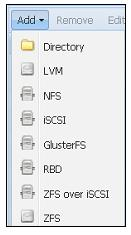
-
Кликните на
iSCSIчтобы открыть блок диалога. -
Заполните необходимую информациею отображенную в следующей таблице. Вводимые значения могут отличаться для вашего окружения.
Элемент Вид информации Вводимое значение IDИмя хранилища.
pmx-iscsiPortalIP узла совместно используемого хранилища.
172.16.0.74TargetАдресат iSCSI настроенный на совместно используемом узле.
iqn.2015-05.com.domain.ctl:iscsi-tgtПрямое применение LUNРазрешение/ запрет прямого применения LUN. Параметр должен быть установлен на запрет. Разрешение может привести к потере данных.
Установите disable.
Следующий экранный снимок показывает блок диалога хранилища iSCSI с уже введенной информацией:
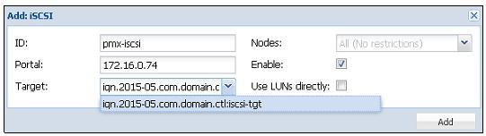
-
Кликните на
Addдля подключения хранилища.Следующий экранный снимок показывает хранилище iSCSI после его возникновения в графическом интерфейсе Proxmox:
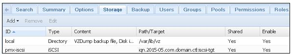
Как это работает...
Следующий снимок экрана показывает файл конфигурации с добавленными настройками хранилища iSCSI. Мы также можем сделать изменения путем прямого редактирования файла:
Есть кое-что еще...
Отметим, что хранилище iSCSI не готово к применению само по себе. Оно просто представляется как блочное устройство или виртуальный пустой диск. Никакие файлы не могут быть сохранены в подключенном хранилище iSCSI. Оно может быть использовано только для создания LVM хранилища с применением адресатов iSCSI в качестве базовых устройств.
LVM хранилище предоставляет очень высокий уровень гибкости поскольку логические тома могут легко создаваться и перемещаться
между физическими хранилищами подключенными к узлу. В LVM хранилище мы можем сохранять только образы виртуальных дисков
.raw. В LVM хранилище невозможно сохранять шаблоны или контейнеры OpenVZ.
Приготовление
LVM может быть сконфигурирован с применением как локально подключенного дискового хранилища, так и iSCSI подключаемого устройства с различных узлов. Локально подключаемый LVM должен настраиваться с применением CLI. В версии ProxmoxVE 3.4 невозможно настраивать локально подключаемый LVM через графический интерфейс.
|
| Замечание |
|---|---|
|
Отметим, что по умолчанию установка Proxmox создает хранилище LVM на диске локальной операционной системы для хранения самого Proxmox. |
Как это сделать...
Следующие разделы покажут как добавлять хранилище LVM с локальными устройствами и создавать LVM с совместно используемыми хранилищами в качестве основы.
Добавление хранилища LVM с локальными устройствами
Следующие шаги показывают как добавить LVM хранилище с локальными устройствами:
|
| Совет |
|---|---|
|
Будьте уверены что устройства не имеют никаких разделов или файловых систем на них, поскольку они будут безвозвратно удалены. |
-
Зарегистрируйтесь в консоли через SSH на узле Proxmox.
-
Создайте физический том на локально подключаемом устройстве:
# pvcreate /dev/sda(id)
-
Создайте группу тома с именем
pmx-lvmvgили любым другим удобным вам именем:# vgcreate pmx-lvmvg /dev/sda(id)
-
Зарегистрируйтесь в графическом интерфейсе Proxmox и перейдите в меню с закладками
Storage. -
Кликните
Addи выберитеLVMв ниспадающем меню. -
Введите
pmx-lvmв качестве имени хранилища. -
Выберите
Existing volume groupsиз ниспадающего менюBase Storage. -
Введите
pmx-lvmvgв текстовом блокеVolume group. -
Кликните на блоки пометок (checkbox)
EnableиShared. -
Кликните на
Addчтобы создать хранилище LVM.
Создание LVM с совместно используемыми хранилищами в основе
Теперь мы собираемся рассмотреть как создать LVM с совместно используемым хранилищем в основе. Следующие шаги показывают как добавить хранилище LVM на сетевых iSCSI устройствах через графический интерфейс:
-
Зарегистрируйтесь через графический интерфейс Proxmox и перейдите в меню с закладками
Storage. -
Кликните
Addи выберитеLVMв ниспадающем меню. -
Введите
pmx-lvmв качестве имени хранилища. -
Выберите
pmx-iscsiв ниспадающем менюBase Storage. Это ровно тот же адресат, который мы подключали в рецепте Соединение с хранилищем iSCSI. -
Введите
pmx-lvmvgв текстовом блокеVolume group. -
Кликните на блоки пометок (checkbox)
EnableиShared. -
Кликните на
Addчтобы создать хранилище LVM.
Следующий снимок экрана показывает блок диалога {добавления} хранилища LVM для LVM хранилищ на основе iSCSI:
Как это работает...
Вот содержание файла настройки хранилища в /etc/pve/storage.cfg после добавления хранилища LVM:
lvm: pmx-lvm
vgname pmx-lvmvg
shared
content images
Есть кое-что еще...
LVM широко применяются во всех видах сетевых сред и является главным локальным хранилищем операционной системы. Если вы не знакомы с LVM, вам стоит научиться управлять им, поскольку это также может быть использовано в виртуальных машинах на основе Linux. Почти все основные дистрибутивы, в том числе Proxmox, используют LVM во время установки в качестве основного раздела устройства операционной системы. Для лучшего понимания как делать хранилище LVM посетите https://www.howtoforge.com/linux_lvm.
Изначально разработанная Sun Microsystems, Network File System
(NFS) вероятно на сегодняшний день является одним из наиболее популярных протоколов совместно используемых
протоколов. В настоящее время в версии 4 совместное использование NFS допускает все типы файлов Proxmox, такие как образы дисков,
шаблоны ISO, контейнеры OpenVZи тому подобные. Почти все виртуальные или физические сетевые среды по всему миру реализуют
некоторые виды хранилищ NFS.
В данном разделе мы собираемся рассмотреть как соединять разделяемые NFS с кластером Proxmox.
Приготовление
Чтобы подключится к разделяемому NFS, разделяемый ресурс должен быть вначале создан в совместно используемой системе хранения.
Следуйте документации используемой вами системы хранения для создания разделяемого ресурса NFS. Для нашего примера мы создадим
разделяемый ресурс с именем pmx-nfs в совместно используемом хранилище FreeNAS.
На сегодня существует четыре версии NFS. Несоответствие версий между серверами NFS и клиентскими узлами может вызвать проблемы с подключением. По умолчанию Proxmox применяет клиент NFS версии 3. Если вы не уверены какая версия используется для ресурса NFS, мы можем запустить следующую команду на узле Proxmox для вывода версии NFS:
#mount –v | grep <mounted_nfs_share_path>
В нашем примере узла мы увидим следующий результат после выполнения команды, который показывает что Proxmox использует
версию 3, поскольку vers=3, а сервер NFS тоже использует версию 3, так как
mountvers=3:
root@pmx1:~# mount –v | grep /mnt/pve/pmx-nfs 172.16.0.74:/mnt/pmx-nfs on /mnt/pve/pmx-nfs type nfs (rw,realatime,vers=3,proto=tcp,sec=sys,mountaddr=172.16.0.74,mountvers=3,mountproto=udp,local_lock=none_
Если сервер NFS расположен за межсетевым экраном, мы должны открыть некоторые порты чтобы получить доступ к разделяемому ресурсу NFS. Существует два порта которые обычно используются сервером NFS:
-
Порт 110 TCP/UDP
-
Порт 2049 TCP/UDP
NFS хранилище может быть подключено к кластеру Proxmox с применением графического интерфейса Proxmox или прямым
редактированием файла настройки хранилища Proxmox в /etc/pve/storage.cfg. Если
вам нужно изменить номер версии NFS используемого Proxmox, мы можем отредактировать этот файл настройки.
Как это сделать...
-
Зарегистрируйтесь в графическом интерфейсе как root или другой пользователь с административными правами.
-
Выберите NFS из подключаемого модуля хранилища. Добавьте ниспадающее меню чтобы открыть блок диалога создания хранилища NFS.
-
Введите необходимую информацию как показано в следующей таблице:
Элемент Вид информации Пример значения IDИмя хранилища.
pmx-nfsServerIP узла совместно используемого узла хранилища.
172.16.0.74ExportВыберите доступный разделяемый ресурс NFS в ниспадающем меню.
pmx-nfsContentВыберите тип сохраняемого содержимого.
Disk Image, ISO imageNodesВыберите узлы Proxmox которые могут использовать данное хранилище.
All
EnableБлок флага для включения/ запрета хранилища.
Checked
Max BackupsМаксимальное численное значение сохраняемых файлов резервных копий. Более старые файлы резервных копий автоматически удаляются.
3 -
Кликните на
Addчтобы добавить хранилище NFS.
Следующий экранный снимок показывает диалоговый блок хранилища NFS с введенными необходимыми значениями:
Есть кое-что еще...
Если нам необходимо изменить версию NFS в Proxmox, мы должны будем отредактировать раздел разделяемого ресурса NFS в фале конфигурации хранилища. Просто измените значения необходимого параметра, как это показано в следующем коде:
nfs: pmx-nfs path/mnt/pve/pmx-nfs server 172.16.0.74 export /mnt/pmx-nfs options vers=3 //change to 4 for version 4 content images, iso maxfiles 2
В данном разделе мы собираемся рассмотреть настройку блочного хранилища Ceph в кластере Proxmox.
Приготовление
Начальная настройка Ceph в кластере Proxmox должна быть выполнена через интерфейс командной строки. После установки Ceph начальная настройка и создание мониторов для всех других задач может быть выполнена через графический интерфейс Proxmox.
Как это сделать...
Сейчас мы рассмотрим как настраивать блочное хранилище Ceph в Proxmox.
По умолчанию Ceph не устанавливается. Перед настройкой узлов Proxmox для целей Ceph, необходимо установить Ceph и с помощью интерфейса командной строки должна быть создана начальная настройка.
Следующие шаги должны быть выполнены на всех узлах Proxmox которые будут частью кластера Proxmox:
-
Зарегистрируйтесь на каждом узле через SSH или консоль.
-
Настройте второй сетевой интерфейс для создания отдельной сети Ceph с другой подсетью.
-
Перезагрузите узлы для инициализации сетевых настроек.
-
Воспользовавшись следующей командой установите пакт Ceph на каждом узле:
# pveceph install –version giant
{Прим. пер.: в настоящее время последняя версия Hammer}
Перед применением Ceph мы должны создать файл начальной настройки Ceph на узле Proxmox+Ceph.
Следующие шаги необходимо выполнить только на одном узле Proxmox который будет частью нашего кластера Ceph:
-
Зарегистрируйтесь на узле с применением SSH или консоли.
-
Выполните следующую команду для создания начальной настройки Ceph:
# pveceph init –network <ceph_subnet>/CIDR
-
Выполните следующую команду для создания первого монитора:
# pveceph createmon
После начальной настройки Ceph и создания первого монитора мы можем продолжить дальнейшую настройку с применением графического интерфейса Proxmox или просто выполняя команду создания монитора Ceph на других узлах.
Следующие шаги показывают как создавать мониторы и OSD Ceph из графического интерфейса Proxmox:
-
Зарегистрируйтесь в графическом интерфейсе Proxmox как root илидругой пользователь с правами администратора.
-
Выберите узел с уже созданным на предыдущем шаге начальным монитором и затем кликните на
Cephиз меню с закладками. Следующий экранный снимок показывает кластер Ceph в том виде как он появился после начальной настройки Ceph: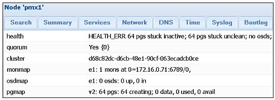
Поскольку никакие OSD пока ещене созданы, это будет нормальным для нового кластера Ceph показывать остановленные группы размещения и неясные ошибки.
-
Кликните на кнопку
Disksменю с закладками подCephчтобы отобразить подсоединенные к узлу диски, как показано на следующем снимке экрана: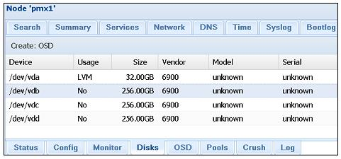
-
Выберите доступный подключенный диск, затем кликните на кнопку
Create: OSDдля открытия диалогового блока OSD, как показано на следующем снимке экрана: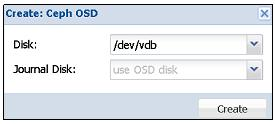
-
Кликните на ниспадающее меню
Journal Diskчтобы выбрать другое устройство или расположить журнал на том же самом OSD оставив его таким по умолчанию. -
Кликните
Createдля завершения создания OSD. -
По необходимости создайте дополнительные OSD в узлах Ceph.
Следующий экранный снимок показывает узел Proxmox с тремя настроенными OSD:
По умолчанию Proxmox создает OSD с разделом ext3. Однако иногда может быть
необходимо создавать OSD с различными типами разделов согласно требований или для улучшения производительности. Введите
команду следующего формата с применением CLI для создания OSD с другим типом раздела:
# pveceph createosd –fstype ext4 /dev/sdX
Следующие шаги показывают как создавать мониторы в графическом интерфейсе Proxmox:
-
Кликните на
Monitorв меню с закладками под элементомCeph. Следующий экранный снимок показывает состояниеMonitorс начальным монитором Ceph, который мы создали ранее в данной главе: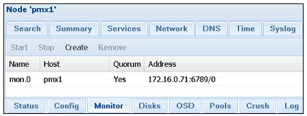
-
Кликните
Createдля открытия диалогового блокаMonitor. -
Выберите узел Proxmox из ниспадающего меню.
-
Кликните кнопку
Createдля запуска процесса создания монитора. -
Создайте в сумме три монитора Ceph для получения кворума Ceph.
Следующий экранный снимок показывает состояние Ceph с тремя мониторами и добавленными OSD:
Заметим, что даже с тремя добавленными OSD группы размещения будут подвисшими и с ошибками. Это происходит потому, что по умолчанию Ceph CRUSH установлен на две реплики. Более того, мы создали OSD только на одном узле. Для успешной репликации нам необходимо добавить немного больше OSD на втором узле так, чтобы данные могли бы реплицироваться дважды. Повторите описанные ранее шаги для создания трех дополнительных OSD на втором узле. После создания еще трех OSD состояние Ceph должно выглядеть как на следующем экране:
В графическом интерфейсе Proxmox возможно выполнять основные задачи подобные созданию или удалению пулов Ceph. Кроме этого мы можем увидеть проверку списка, состояния, числа групп размещения и использования пулов Ceph.
Следующие шаги показывают как проверять, создавать и удалять пулы Ceph с помощью графического интерфейса Proxmox:
-
Кликните меню с закладками
PoolsподCephв графическом интерфейсе Proxmox. Следующий экранный снимок показывает состояние пула по умолчаниюrbd, который имеет 1 реплику, 256 PG и 0% использования: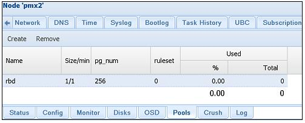
-
Кликните на
Createдля открытия диалогового блока создания. -
Заполните необходимую информацию, такую как имя пула, размер реплики и число групп размещения. Пока карта CRUSH не была полностью настроена набор правил должен быть оставлен взначении по умолчанию
0. -
Кликните
OKдля создания пула. -
Чтобы удалить пул выберите пул и кликните на
Remove. Запомните, что после удаления пула Ceph все хранимые в нам данные будут безвозвратно удалены.
Чтобы увеличить число групп размещения, выполните следующую команду в интерфейсе командной строки:
#ceph osd pool set <pool_name> pg_num <value> #ceph osd pool set <pool_name> pgp_num <value>
|
| Замечание |
|---|---|
|
Существует возможность только увеличивать значение групп размещения. Будучи увеличенным, значение групп размещения никогда не может быть уменьшено. |
После того как кластер Ceph полностью настроен мы можем выполнить присоединение его к кластеру Proxmox.
В процессе создания файла настройки Ceph также создает кольцо с ключами аутентификации в пути каталога
/etc/ceph/ceph.client.admin.keyring.
Это кольцо с ключами должно быть скопировано и переименовано для отображения имени ID хранилища, которое должно быть создано в Proxmox Выполните следующие команды для создания каталога и копирования кольца ключей:.
# mkdir /etc/pve/priv/ceph # cd /etc/ceph/ # cp ceph.client.admin.keyring /etc/pve/priv/ceph/<storage>.keyring
Для нашего хранилища мы присвоили ему имя rbd.keyring.
После копирования кольца с ключами мы можем подключить хранилище Ceph RBD к Proxmox с применением графического
интерфейса:
-
Кликните на
Datacenter, затем наStorageв меню с закладками. -
Кликните на ниспадающее меню
Addи выберите подключаемое хранилищеRBD. -
Введите информацию описанную в следующей таблице:
Элемент Вид информации Введенное значения IDИмя хранилища.
rbdPoolИмя пула Ceph.
rbdMonitor HostIP адрес и номер порта монитора Ceph. Мы можем ввести множество хостов для избыточности.
172.16.0.71:6789;
172.16.0.72:6789;
172.16.0.73:6789;User nameАдминистратор Ceph по умолчанию.
AdminNodesУзлы Proxmox которые могут использовать данное хранилище.
All
EnableБлок флага для включения/ запрета хранилища.
Checked
-
Кликните на
Addдля подключения хранилища RBD. Следующий снимок экрана показывает хранилище RBD вSummary: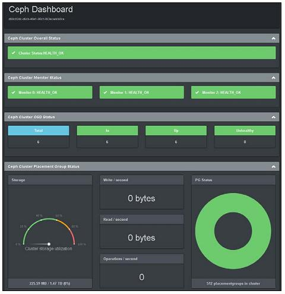
Поставка Ceph сама по себе не приходит ни с каким графическим интерфейсом для управления или мониторинга кластером. Мы можем просматривать состояние кластера и выполнять различные связанные с Ceph задачи с применением Proxmox GUI. Существует ряд пакетов программного обеспечения сторонних разработчиков, которые делают возможным графический интерфейс для Ceph, чтобы управлять и наблюдать за кластером. Некоторые программы предоставляют возможности управления, в то время как другие обеспечивают функции мониторинга Ceph, доступные только на чтение. Ceph Dash является таким программным обеспечением, которое обеспечивает привлекательный графический интерфейс для мониторинга всего кластера Ceph только для чтения без входа в графический интерфейс Proxmox. Ceph Dash свободно доступен через GitHub. Существуют и другие супертяжелые панели графического интерфейса Ceph, такие как Kraken, Calamari и прочие. В этом разделе мы собираемся только рассмотреть то, как настроить графический интерфейс мониторинга Ceph Dash.
Следующие шаги могут использоваться для загрузки и запуска Ceph Dash для наблюдения за кластером Ceph с применением любого веб- просмотрщика:
-
Зарегистрируйтесь на любом узле Proxmox, который также является монитором Ceph.
-
Выполните следующие команды для загрузки и запуска приборной панели:
# mkdir /home/tools # apt-get install git # git clone https://github.com/Crapworks/ceph-dash # cd /home/tools/ceph-dash # ./ceph_dash.py
-
Ceph Dash теперь запущен на прослушивание порта
5000нашего узла. Если узел находится за межсетевым экраном, откройте порт5000или любой другой порт с переадресацией в межсетевом экране. -
Откройте браузер и введите
<node>5000чтобы открыть приборную панель. Следующий экранный снимок показывает приборную панель кластера Ceph, которуюмы создали: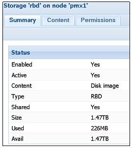
Мы также можем наблюдать за состоянием кластера Ceph через интерфейс командной строки с применением следующих команд:
-
Чтобы проверить состояние Ceph:
# ceph –s
-
Для просмотра различных узлов OSD:
# ceph osd tree
-
Для отображения журналов Ceph в реальном времени:
# ceph –w
-
Для изменения числа реплик в пуле:
# rados lspools
-
Ceph.
# ceph osd pool set size <value>
Кроме предшествующих команд существует еще много команд CLI для управления Ceph и выполнения расширенных задач. Официальная документация Ceph имеет огромное количество информации и руководств как-делать с командами CLI для их выполнения. Документация может быть найдена в http://ceph.com/docs/master/
Как это работает...
На данный момент мы имеем успешно интегрированный кластер Ceph c кластером Proxmox, который составляет шесть OSD, три MON
и три узла. При просмотре страницы Ceph Status мы
можем увидеть что существует 256 групп размещения в нашем кластере, а общее пространство хранения кластера составляет 1.47ТБ.
Состояние кластера будет иметь состояние групп размещения active+clean. Основываясь
на природе проблемы, группы размещения могут иметь различные состояния, такие как active+unclean,
inactive+degraded, active+stale и тому подобные.
|
| Замечание |
|---|---|
|
Для подробного изучения всех состояний посетите http://ceph.com/docs/master/rados/operations/pg-states/ . |
Настроив второй сетевой интерфейс, мы можем отделить сеть Ceph от основной сети.
Команда #pveceph init создает файл настройки в каталоге
/etc/pve/ceph.conf. Файл конфигурации только что настроенного Ceph выглядит аналогично
следующему экранному снимку:
Поскольку файл настройки /etc/pve/ceph.conf сохраняется в pmxcfs,
любые изменения сделанные в нем немедленно реплицируются на все узлы Proxmox в нашем кластере.
В Proxmox 3.4 Ceph RBD может сохранять только формат образов .raw. Никакие шаблоны,
контейнеры или файлы резервного копирования не могут быть сохранены в блочном устройстве RBD.
Вот содержание файла настройки хранилища после добавления нашего хранилища Ceph RBD:
rbd: rbd
monhost 172.16.0.71:6789;172.16.0.72:6789;172.16.0.73:6789
pool rbd
content images
username admin
Если ситуация диктует изменение IP адреса любого узла, то мы можем просто изменять это содержание в нашем фале настройки изменяя вручную IP адреса узлов мониторов Ceph.
Также смотрите
-
Для подробного изучения Ceph посетите http://ceph.com/docs/master/ для получения официальной документации Ceph.
-
Также посетите https://indico.cern.ch/event/214784/session/6/contribution/68/material/slides/0.pdf для поиска примеров использования Ceph в CERN для хранения массивных данных, создаваемых Большим адронным коллайдером (
LHC, Large Hadron Collider). -
{Прим. пер.: или ознакомьтесь с переводом книги "Изучаем Ceph" Карана Сингха}.
Изначально разрабатывавшееся Sun Microsystems, хранилище ZFS является комбинацией файловой системы и LVM, предоставляющее хранилище большой емкости с важными характеристиками, такими как защита данных, компрессия данных, самовосстановление и моментальные снимки. ZFS имеет встроенный определяемый программным программным обеспечением RAID, который делает необязательным применение аппаратно реализованного RAID. Дисковый массив с ZFS RAID может мигрировать на абсолютно другой узел без перестроения всего массива.
|
| Замечание |
|---|---|
|
Для получения подробностей по ZFS посетите http://en.wikipedia.org/wiki/ZFS {Прим. пер.: русскоязычная страница http://ru.wikipedia.org/wiki/ZFS} . |
В Proxmox VE 3.4 подключаемый модуль хранилища ZFS уже включен, что улучшает использование ZFS естественным путем в узлах кластера Proxmox Пул ZFS поддерживает следующие типы RAID:
| Тип RAID | Необходимый минимум |
|---|---|
Пул RAID-0 |
1 диск |
Пул RAID-1 |
2 диска |
Пул RAID-10 |
4 диска |
Пул RAIDZ-1 |
3 диска |
Пул RAIDZ-2 |
4 диска |
{Пул RAIDZ-3} |
{5 дисков |
В хранилище ZFS мы можем хранить только образы виртуальных дисков в формате .raw.
Приготовление
Для определения хранилища ZFS использует пулы. Пулы могут создаваться в Proxmox VE 3.4 только с помощью интерфейса командной строки. После создания пулов они могут быть соединены с Proxmox с применением графического интерфейса Proxmox. Следующая таблица показывает какая строка применяется для различных уровней RAID ZFS:
| Тип RAID | Применяемая строка |
|---|---|
RAID-0 |
никакой строки |
RAID-1 |
|
RAID-10 |
|
RAIDZ-1 |
|
RAIDZ-2 |
|
{RAIDZ-3} |
{ |
Как это сделать...
для нашего примера мы собираемся создать RAID1 пул с зеркалироанием с именем zfspool1
и соединить его с Proxmox. Следующая программа применяется для создания пула ZFS:
# zpool create –f <pool_name> <raid_type> <dev1_name> <dev2_name> ...
В двух следующих разделах мы обсудим две вещи:
-
Создание пула ZFS и подсоединение его к кластеру Proxmox
-
Совместное использование хранилища ZFS между узлами Proxmox
-
Зарегистрируйтесь в консоли узла Proxmox с достаточным числом подключенных дисков.
-
Создайте пул ZFS с применением следующего формата команды:
# zpool create –f zfspool1 mirror /dev/<id> /dev/<id>
-
Проверьте создание пула воспользовавшись следующей командой:
# zpool list
-
Успешно создание пула ZFS отобразит следующий список пулов:
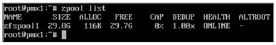
Команда приводимого ниже формата подключит пул ZFS к кластеру Proxmox через CLI:
# pvesm add <storage_ID> -type <storage_type> -pool <pool_name>
Для нашего примера мы собираемся подключить пул ZFS с именем zfspool1 воспользовавшись
командой:
# pvesm add zfs –type zfspool –pool zfspool1
Команда подключения пула ZFS к кластеру Proxmox должна выполняться на узле, на котором создан пул ZFS.
Пул ZFS будет работать только локально на том узле, где он создан. Другие узлы в кластере Proxmox не смогут разделять это хранилище. Монтируя пул ZFS локально и создавая разделяемый ресурс NFS мы делаем возможным совместное использование пула в узлах Proxmox.
Процесс монтирования и создания разделяемого ресурса необходимо выполнять только через интерфейс командной строки. Из графического интерфейса Proxmox мы можем только подключать разделяемый ресурс NFS с обеспечивающим его пулом ZFS:
-
По умолчанию пул ZFS автоматически монтируется в корневой путь
/<pool_name>. Нам необходимо создать каталог, в котором мы собираемся смонтировать пул повторно:# mkdir /mnt/zfs -
Мы можем перемонтировать пул во вновь созданном каталоге с использованием следующей команды:
# zfs set mountpoint=/mnt/zfs zfspool1 -
Установите NFS сервер с применением следующей команды на узле Proxmox, если он еще не установлен:
# apt-get install nfs-kernel-server -
Введите следующую строку в
/etc/exports:/mnt/zfs/ 172.16.0.71/24(rw,nohide,async,no_root_squash) -
Запустите службу NFS с применением следующей команды:
# service nfs-kernel-server start -
Зарегистрируйтесь в графическом интерфейсе Proxmox и повторите шаги из рецепта Соединение с хранилищем NFS, приведенного ранее в данной главе для соединения нового разделяемого ресурса с Proxmox.
Как это работает...
Объединяя пул ZFS с разделяемым ресурсом NFS, мы можем создать совместно используемое хранилище с полным набором функциональности ZFS, таким образом, создавая гибкое совместно используемое хранилище для применения со всеми узлами Proxmox в вашем кластере. Применяя такую технику мы можем создать резервную копию узла хранения, которой также можно будет управлять через графический интерфейс Proxmox. Таким образом, в случае перегруженности узла, мы также можем осуществить миграцию виртуальной машины временно резервируя узлы.
Вот содержимое файла настройки хранилища после добавления системы хранения ZFS:
zfspool: zfs
pool zfspool1
content images
В отличие от других систем хранения, GlusterFS {Прим. пер.: как и CephFS} является распределенной файловой системой, которая способна масштабироваться до нескольких Петабайт и обслуживать тысячи клиентов. Эта файловая система не требует никаких серверов метаданных, таким образом не существует никакой единой точки отказа. GlusterFS делает возможным создание кластеров хранения с высокой доступностью с применением общедоступных аппаратных средств, тем самым уменьшая стоимость и привязку к производителю. В Proxmox VE 3.4 существует собственный подключаемый модуль хранилища для подключения GlusterFS к кластерам Proxmox.
|
| Замечание |
|---|---|
|
Чтобы узнать болше о GlusterFS ознакомьтесь с официальной документацией http://gluster.readthedocs.org/en/latest/Administrator%20Guide/GlusterFS%20Introduction/.} . |
Приготовление...
В отличие от ZFS, Proxmox не имеет предустановленных пакетов для GlusterFS. Можно установить пакеты GlusterFS на тот же узел Proxmox или установить отдельный узел только для целей GlusterFS В отличие от Ceph, установка GlusterFS не встроена полностью в Proxmox с пользовательскими командами. Все подробности по установке GlusterFS выходят за рамки предмета данной книги.
|
| Замечание |
|---|---|
|
Для инструкций о том как установить кластер GlusterFS, посетите http://gluster.readthedocs.org/en/latest/Quick-Start-Guide/Quickstart/. |
Следуя официальному руководству, создайте два узла Gluster в режиме репликаций. В конце установки GlusterFS создайте том Gluster
с именем gfsvol1or или любым другим удобным для вас с тем, чтобы использовать его для
соединения с кластером Proxmox в следующем разделе.
Как это сделать...
Следующие шаги присоединят пул GlusterFS к Proxmox с применением графического интерфейса:
-
Зарегистрируйтесь в графическом интерфейсе Proxmox.
-
Перейдите в меню с закладками
Storageи кликните на ниспадающее менюAddдля выбора подключаемого модуляGlusterFS. -
Следующая таблица отображает типы необходимой информации и используемые в нашем примере значения для подключения GlusterFS:
Элемент Описание Вводимое значение IDНовое имя хранилища
glusterServerIP адрес первого узла Gluster
172.16.0.72Second ServerIP адрес второго узла Gluster
172.16.0.73Volume nameНиспадающее меню для выбора доступных томов в узле Gluster
gfsvol11ContentВыбор типа хранимых файлов
Disk image,ISO imageNodesВыбор узлов, которые могут осуществлять доступ к хранилищу
AllEnableРазрешение или запрет хранилища
EnabledMax BackupsМаксимальное число последних резервных копий, которое может храниться. Более старые резервные копии будут удаляться автоматически в процессе резервирования.
2 -
Кликните на кнопку
Addдля присоединения хранилища.
Как это работает...
Вот содержание файла настройки хранилища после добавления системы хранения Gluster:
glusterfs: gluster
volume gfsvol1
path /mnt/pve/gluster
content images
server 172.16.0.72
server 172.16.0.73
maxfiles 2